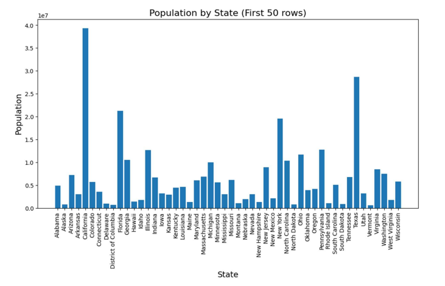
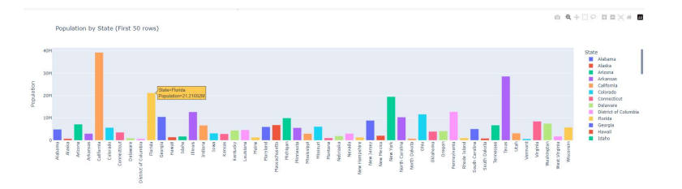
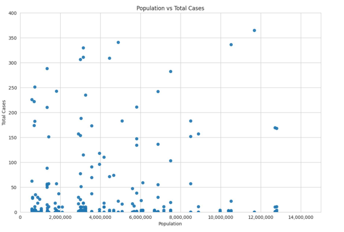

Introduction
In today's data-driven world, HR analytics plays a crucial role in understanding workforce dynamics and making informed decisions. By analyzing various HR metrics, organizations can identify trends, optimize training programs, and enhance overall employee performance. Let's delve into three insightful graphs that shed light on the interplay between training, department performance, and employee demographics.
Graph -1
This line chart highlights the distribution of training sessions across different departments. The y-axis represents the number of trainings, while the x-axis lists various departments. Analytics and Procurement departments show a moderate number of trainings, with each having over 3,000 sessions.
The code provided loads data into a Pandas DataFrame from a CSV file stored at the URL ,The essential statistics of the 'Age' column are then printed using Pandas DataFrame's describe() method.
The distribution of the 'Age' column can be seen using a histogram produced with Matplotlib. Using the 'bins' argument of the 'plt.hist()' function, the 'Age' values have been divided into 20 bins. The x-axis label is "Age," while the y-axis label is "Frequency." Finally, using the 'plt.show()' method, the histogram is presented.Graph -2
The code slices DataFrame df to get only the first 50 rows, groups the data by state, calculates the sum of the population column for each state, and creates a bar chart using Matplotlib with the x-axis representing the states and the y-axis representing the population.The chart title is set to 'Population by State (First 50 rows)', the x-axis and y-axis labels are set to 'State' and 'Population', and the chart is displayed using the plt.show() function
Graph -3
The code creates a new DataFrame 'date_data' that includes only the'submission_date' and 'tot_cases' columns from the original DataFrame 'df'. The data is grouped by'submission_date' and the 'tot_cases' column is summed up using the groupby() function. An interactive line chart is created using the plotly library with the'submission_date' column as the x-axis and the 'tot_cases' column as the y-axis. The chart title is set using the 'title' variable and the chart layout is customized using the 'update_layout()' function. Finally, the chart is displayed using 'fig.show()' to visualize the total cases by date in an interactive line chart.